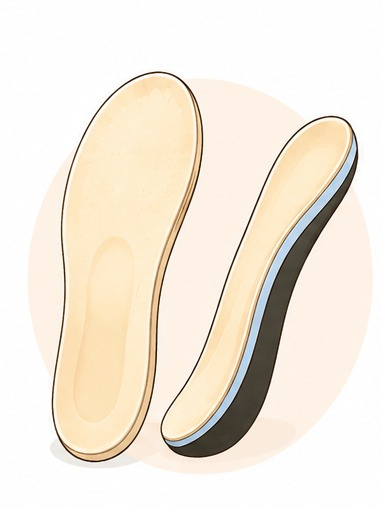
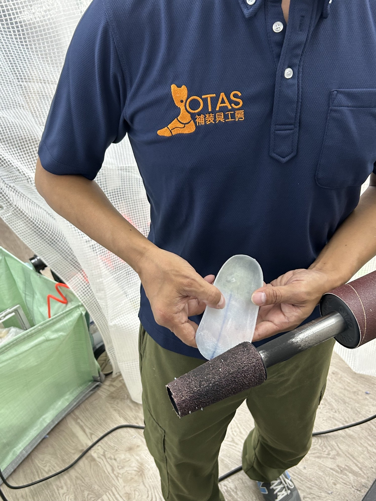
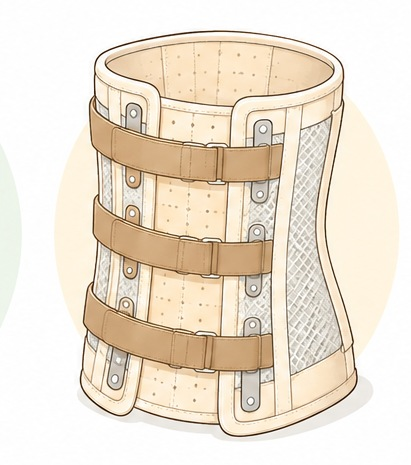
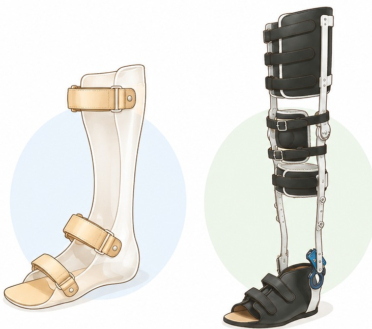
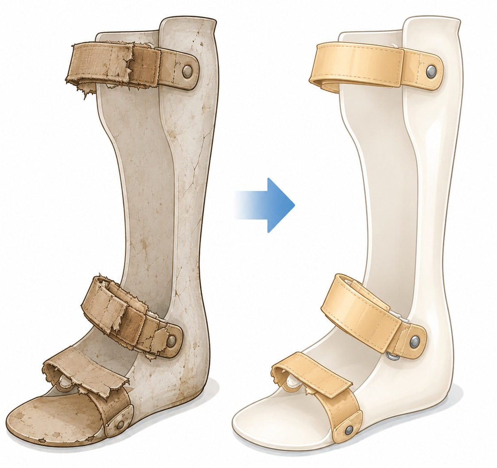
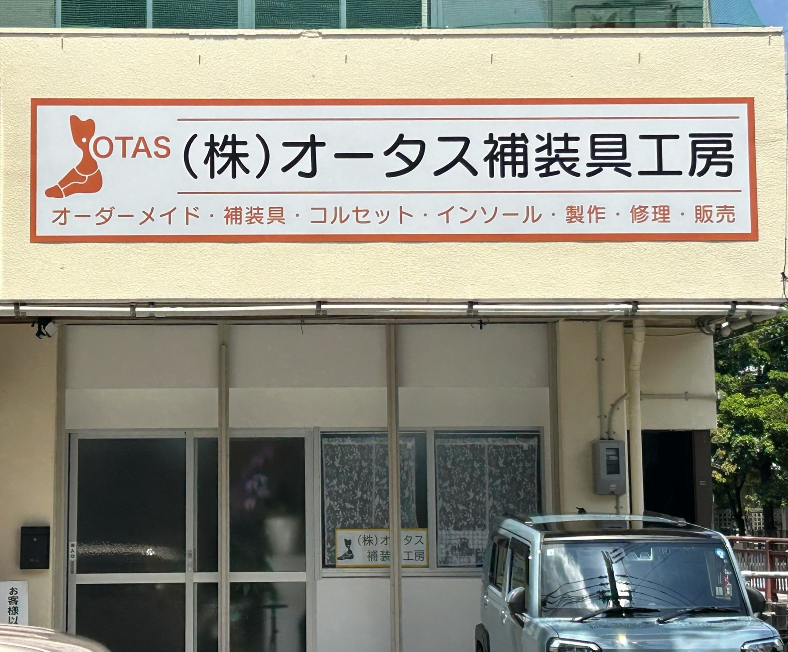

オーダーメイドインソール
症状・歩行・姿勢に合わせて製作します。
インソールについて詳しく見る確かな技術と誠実な対応で、
「装具を作りたい」「今使っている装具を直したい」など、まずはお気軽にお電話ください。
098-987-0655受付時間 9:00～17:30 定休日 土・日・祝日

SERVICES
オーダーメイド補装具の製作・修理・調整

症状・歩行・姿勢に合わせて製作します。
インソールについて詳しく見る
身体に合わせて
丁寧に製作・調整します。

短下肢装具や長下肢装具、体幹装具など、一人ひとりの状態に合わせて製作します。

ベルト交換・部品交換・本体の補修や調整など、状態に合わせて対応します。
ABOUT
沖縄県那覇市三原で、短下肢装具・長下肢装具・体幹装具、 コルセット・オーダーメイドインソールなどの製造・修理・調整を行っています。 経験豊富な義肢装具士と技能士が確かな技術と誠実な対応を大切に、安心してご使用いただける補装具づくりに取り組みます。

FIRST VISIT
補装具の製作・修理・調整について、まずはお気軽にご相談ください。
ご希望の装具や修理・調整について、分かる範囲でお聞かせください。
治療用装具や補装具制度など、必要に応じて受診・手続きについてご案内します。
お身体の状態や使用中の装具を確認し、製作・修理・調整の内容をご相談します。
一人ひとりに合わせて丁寧に対応し、完成後も必要に応じて調整します。
COMPANY